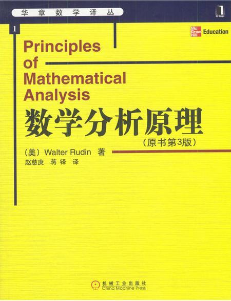
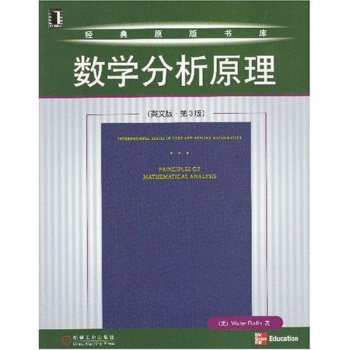
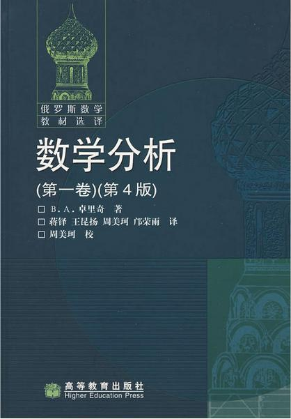

naive blog
关于自学书籍的选择方法
高中毕业生想要入门大学数学，可以学哪些书呢？这个问题知乎上许多大大都回答过具体的数目，那么我就来谈谈选择的时候有什么标准。



首先国别方面，我们能接触到的数学书一般为国内、美国和苏联的数学书。就我所看到的而言，国内的教材比较符合我们国人的学习模式，我们可以很习惯地学习国内的教材（我看的国内的教材比较少，所以会有一些失偏颇）。而美国的数学书，写法相对较让人理解，但缺点就是有的知识点没有覆盖到，只是“提纲挈领”，需要我们较多的思考。而苏联的教材，是最难的教材，但也是最全面的教材，一个Taylor公式的余项，Rudin的数学分析原理可能只会介绍一两种，而Zorich的数学分析介绍了五六种。此外， 苏联教材的课后习题请勿随意挑战。
其次，出版社方面，国内的书我一般看高等教育出版社的，而美国的便是机械工业出版社的黄皮系列（中文版）或者机械工业出版社的墨绿皮系列（英文版），苏联的是高等教育出版社的墨绿皮系列。
（ 这三张图只是我推荐的书的出版社系列，而非我推荐这三本书 ，想看具体有哪些书的同学请移步评论区）
最后，有的人会问，看美国的教材，是看原版教材还是翻译的教材呢？我建议有一定数学基础的人可以看原版的书。首先，数学专业的英文单词虽然我们十分陌生，但不是很多，啃一两个星期就可以流利阅读了。其次，只有大致了解一定数学知识的人我才建议看原版书，因为如果啥都不知道就去看原版书，将来可能只知道这个概念的英文名，但大学中还是需要用中文交流的，这是十分不方便的。最后，在学习更加深入之后，有许多论文并没有汉化版，所以将来还是会需要英文基础的。
以上便是我暂时想到的，希望大家踊跃指正、补充~